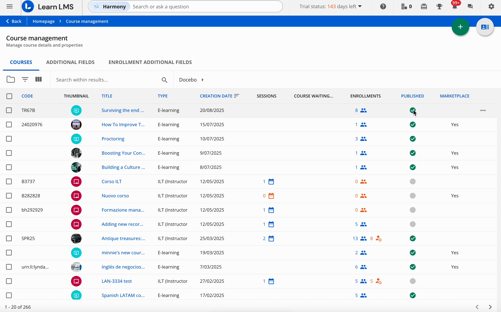
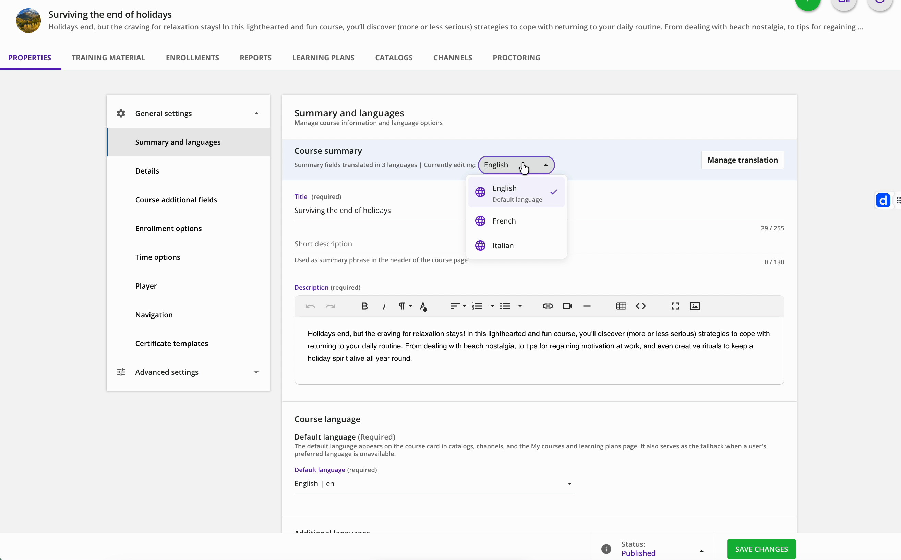
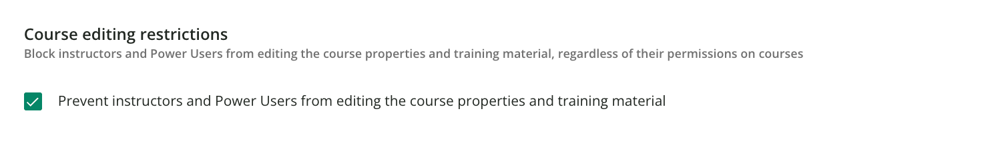
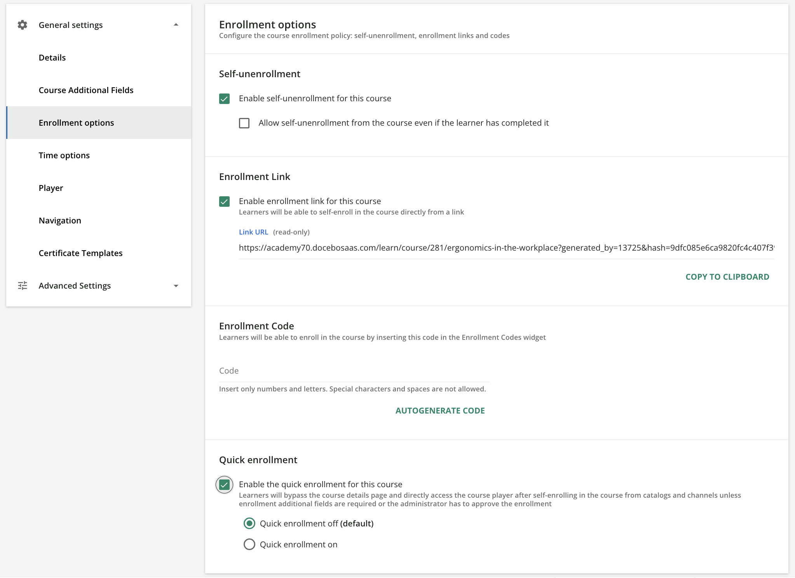
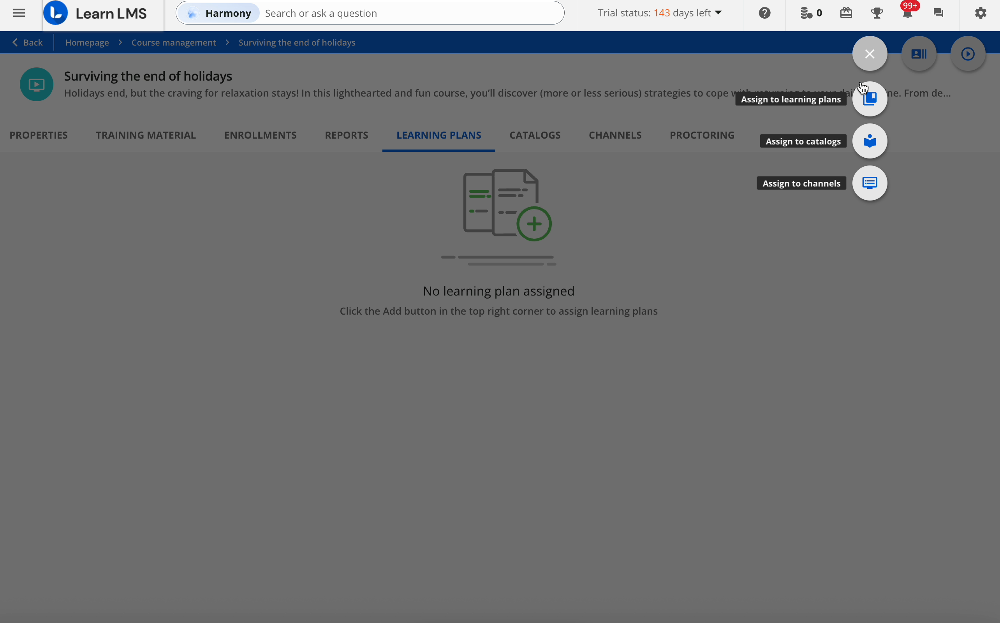
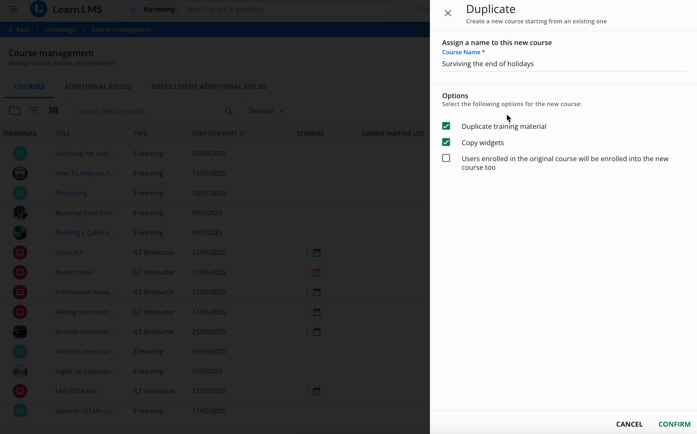
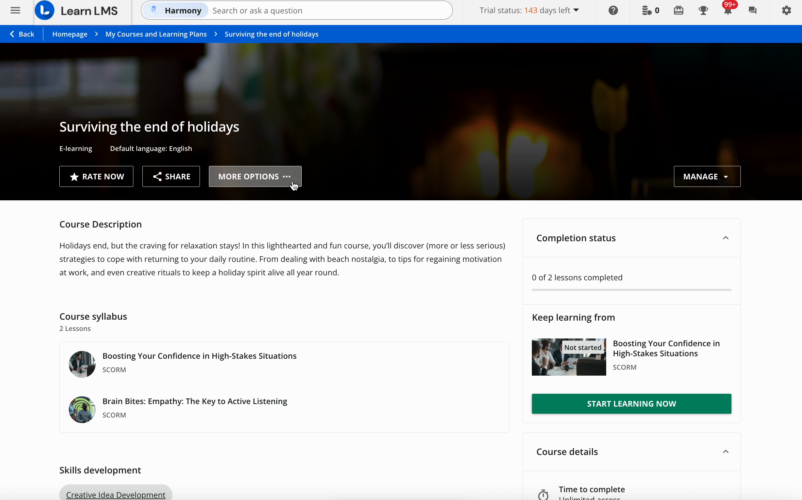

Администрирование
Управление курсами в Docebo
Инструкция для работы с уже созданными курсами: поиск курса, свойства, публикация, enrollment-настройки, связи с каталогами и каналами, отчеты, дублирование, удаление и проверка learner view.
Откройте нужный курс
Перейдите в раздел Courses и найдите курс по названию, коду, категории, статусу или другим доступным фильтрам.
Как перейти к настройкам
- Откройте Navigation menu.
- Перейдите в Content and delivery.
- Выберите Courses.
- Найдите курс в списке и откройте его по названию или через меню действий.

Проверьте Properties
Во вкладке Properties собраны основные настройки курса. Не меняйте все подряд: сначала определите, что именно нужно исправить.
Summary and languages
Проверьте название, описание, short description и переводы. Для пользователей текст будет показан на языке, который доступен в настройках курса; если перевода нет, Docebo использует язык по умолчанию.
Details
Проверьте код курса, категорию, автора, дату создания и дату последнего обновления. Тип курса и внутренний ID не редактируются.
General settings
Настройте thumbnail, header layout, skills, additional fields, time options, navigation, player, certificate templates, catalog options и score/credits по требованиям курса.
Editing restrictions
Если курс должен редактироваться только Superadmin, включите запрет на изменение свойств и training material для instructors и Power Users.


Настройте enrollment-поведение
Раздел Enrollment options определяет, как пользователи могут попасть на курс и могут ли они самостоятельно отписаться.
Что проверить
- Self-unenrollment: можно ли пользователю самостоятельно выйти из курса.
- Enrollment link: нужна ли ссылка для самостоятельной записи.
- Enrollment code: нужен ли код записи через соответствующий виджет.
- Quick enrollment: должен ли пользователь сразу попадать в player после записи.

Проверьте связи курса
У курса могут быть связи с learning plans, catalogs и channels. Эти связи влияют на доступность и отображение курса.
- Для добавления связи откройте курс, нажмите кнопку с плюсом и выберите Assign to learning plans, Assign to catalogs или Assign to channels.
- Для удаления связи откройте соответствующую вкладку курса и используйте Unassign в меню строки.
- Power Users видят только те catalogs и learning plans, на которые у них есть права.

Опубликуйте или снимите курс с публикации
Новый курс обычно находится в статусе Under maintenance и не виден пользователям. Для доступа learners переведите его в Published.
Через страницу курса
Внизу страницы редактирования выберите нужный Status и нажмите Save changes. Используйте этот способ, когда параллельно меняете свойства курса.
Через список Courses
В списке Courses используйте переключатель или массовое действие Change status. Это удобно, если нужно быстро опубликовать или скрыть несколько курсов.
Откройте Reports внутри курса
Во вкладке Reports можно проверить прогресс пользователей, статистику по курсу и training materials, а также assignments.
- Используйте Reports перед закрытием курса, чтобы убедиться, что нет ошибочных незавершенных записей.
- Сравнивайте результаты с настройками Score and credits, если итоговый score берется из конкретного материала или считается по всем материалам.
- Если пользователи self-unenroll из курса, их tracking data может перестать отображаться в course report.
Дублируйте или удаляйте курс аккуратно
Дублирование полезно для повторного запуска похожего курса. Удаление необратимо влияет на tracking data и связи курса.
Duplicate
- Откройте меню с тремя точками в строке курса и выберите Duplicate.
- Введите новое название курса.
- Выберите, копировать ли training material, widgets и enrollments.
- Проверьте обязательные additional fields, если они есть в платформе.

Проверьте Learner view перед запуском
После настройки курса откройте Learner view и проверьте, как курс выглядит для пользователя.
Что проверить глазами пользователя
- Название, описание, thumbnail и header.
- Отображение course widgets и важной информации.
- Доступность материалов, навигация и порядок прохождения.
- Поведение enrollment, если включены catalog access, enrollment link или quick enrollment.
